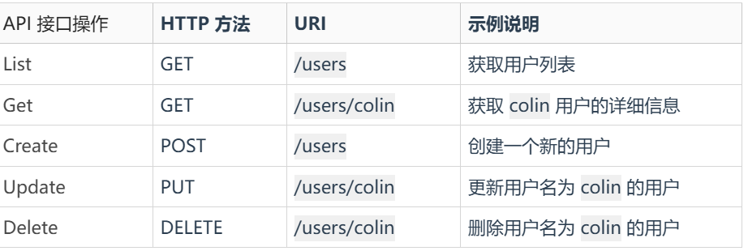
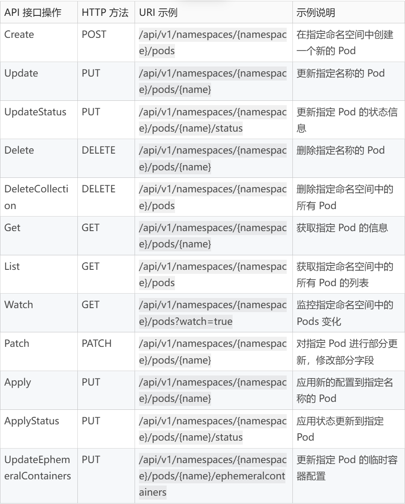

23｜Kubernetes支持哪些RESTful API接口？
接下来，我们从源码层面看下 Kubernetes 具体是如何构建一个 RESTful API 接口的。为了方便你理解，我会花三节课来讲解：
- Kubernetes 支持哪些 RESTful API 接口？
- 如何使用 go-restful 开发一个 Web 服务器？
- Kubernetes 路由构建源码剖析
这节课，我们先来讲 Kubernetes 支持的 RESTful API 接口。
Kubernetes 中支持哪些 HTTP 接口？
首先，我们来看下，Kubernetes 中支持哪些 HTTP 接口。一般的企业应用通常会支持以下 HTTP 路由：

Kubernetes 中除了支持上述 API 接口操作之外，还支持更多的接口操作类型，如下（可参考 pod.go 文件）：

Kubernetes HTTP 路由生成方法
Kubernetes 中 HTTP 路由的构建，其实分为客户端 HTTP 路由构建和服务端 HTTP 路由指定两种方式。
- 客户端 HTTP 路由构建：指 client-go 根据 SDK 提供的接口，在最终发送 HTTP 请求时，指定 HTTP 路由。
- 服务端 HTTP 路由指定：指 kube-apiserver 在服务启动时设置 HTTP 路由，类似于 r.GET这种形式。
接下来，我们分别来说。
客户端 HTTP 路由构建
通常通过 SDK 来访问 kube-apiserver。Kubernetes 提供 client-go 包供 Go 开发者高效访问 kube-apiserver。
client-go 是由 client-gen工具自动生成的。在使用 client-gen生成 client-go 代码时，我们可以指定需要给资源生成的 API 操作。
例如，我们新增加了一个 XXX资源，资源定义如下（见 xxx_types.go 文件）：
package resourceobject
import (
metav1 "k8s.io/apimachinery/pkg/apis/meta/v1"
)
// +enum
type XXXPhase string
// These are the valid phases of a xxx.
const (
// XXXRunning means the xxx is in the running state.
XXXRunning XXXPhase = "Running"
// XXXPending means the xxx is in the pending state.
XXXPending XXXPhase = "Pending"
)
// +genclient
// +k8s:deepcopy-gen:interfaces=k8s.io/apimachinery/pkg/runtime.Object
// XXX is an example definition of a Kubernetes resource object.
type XXX struct {
metav1.TypeMeta `json:",inline"`
// Standard object's metadata.
// More info: https://git.k8s.io/community/contributors/devel/sig-architecture/api-conventions.md#metadata
// +optional
metav1.ObjectMeta `json:"metadata,omitempty" protobuf:"bytes,1,opt,name=metadata"`
// Spec defines the behavior of the XXX.
// More info: https://git.k8s.io/community/contributors/devel/sig-architecture/api-conventions.md#spec-and-status
// +optional
Spec XXXSpec `json:"spec,omitempty" protobuf:"bytes,2,opt,name=spec"`
// Status describes the current status of a XXX.
// More info: https://git.k8s.io/community/contributors/devel/sig-architecture/api-conventions.md#spec-and-status
// +optional
Status XXXStatus `json:"status,omitempty" protobuf:"bytes,3,opt,name=status"`
}
// XXXSpec describes the attributes on a XXX.
type XXXSpec struct {
// DisplayName is the display name of the XXX resource.
DisplayName string `json:"displayName" protobuf:"bytes,1,opt,name=displayName"`
// Description provides a brief summary of the XXX's purpose or functionality.
// It helps users understand what the XXX is intended for.
// +optional
Description string `json:"description,omitempty" protobuf:"bytes,2,opt,name=description"`
// You can add more status fields as needed.
// +optional
}
// XXXStatus is information about the current status of a XXX.
type XXXStatus struct {
// Phase is the current lifecycle phase of the xxx.
// +optional
Phase XXXPhase `json:"phase,omitempty" protobuf:"bytes,1,opt,name=phase,casttype=NamespacePhase"`
// ObservedGeneration reflects the generation of the most recently observed XXX.
// +optional
ObservedGeneration int64 `json:"observedGeneration,omitempty" protobuf:"varint,2,opt,name=observedGeneration"`
// Represents the latest available observations of a xxx's current state.
// +optional
// +patchMergeKey=type
// +patchStrategy=merge
// +listType=map
// +listMapKey=type
Conditions []metav1.Condition `json:"conditions,omitempty" patchStrategy:"merge" patchMergeKey:"type" protobuf:"bytes,3,rep,name=conditions"`
// You can add more status fields as needed.
// +optional
}
// +k8s:deepcopy-gen:interfaces=k8s.io/apimachinery/pkg/runtime.Object
// XXXList is a list of XXX objects.
type XXXList struct {
metav1.TypeMeta `json:",inline"`
// Standard list metadata.
// More info: https://git.k8s.io/community/contributors/devel/sig-architecture/api-conventions.md#metadata
// +optional
metav1.ListMeta `json:"metadata,omitempty" protobuf:"bytes,1,opt,name=metadata"`
// Items is a list of schema objects.
Items []XXX `json:"items" protobuf:"bytes,2,rep,name=items"`
}
我们可以执行以下 client-gen命令来给 XXX生成 SDK 方法：
$ git clone https://github.com/superproj/k8sdemo.git
$ cd resourcedefinition/
$ go mod tidy
$ client-gen -v 10 --go-header-file ./boilerplate.go.txt --output-dir ./generated/clientset --output-pkg=github.com/superproj/k8sdemo/resourcedefinition/generated/clientset --clientset-name=versioned --input-base= --input $PWD/apps/v1beta1
上述命令会生成 apps/v1beta1目录中指定资源的客户端方法，用到的命令行参数释义如下：
- -v 10：设置日志级别，数值越高，输出的日志信息越详细。
- --go-header-file ./boilerplate.go.txt：指定一个 Go 文件头的模板（boilerplate），通常用于添加版权信息、作者信息等。这会被添加到生成的每个文件的顶部。
- --output-dir ./generated/clientset：指定生成代码的输出目录。在这个例子中，生成的客户端代码将存放在 ./generated/clientset 目录下。
- --output-pkg=github.com/superproj/k8sdemo/resourcedefinition/generated/clientset：设置生成代码的包名称。
- --clientset-name=versioned：指定生成的客户端集的名称。此处定义的 versioned 客户端集将用于封装 API 资源的访问。
- --input-base=：该参数用于设置输入基础路径。如果不设置，会默认使用当前工作目录作为基础路径。一般来说，留空表示从输入路径开始。
- --input $PWD/apps/v1beta1：指定要生成客户端代码的 API 资源的目录。$PWD/apps/v1beta1 表示当前工作目录下的 apps/v1beta1 文件夹，通常这个文件夹包含了 API 的定义文件和类型定义。
client-gen工具生成的 XXX 资源方法见：generated/clientset/versioned/typed/apps/v1beta1/xxx.go。
这里要注意，apps/v1beta1目录中可能定义了很多个 Kubernetes 资源对象，client-gen工具会根据资源定义之上有无 // +genclient注释，来判断是否要为该资源生成 SDK 方法。如果有 // +genclient则生成，没有 // +genclient则不生成，例如：
// +genclient
// +k8s:deepcopy-gen:interfaces=k8s.io/apimachinery/pkg/runtime.Object
// XXX is an example definition of a Kubernetes resource object.
type XXX struct {
metav1.TypeMeta `json:",inline"`
// Standard object's metadata.
// More info: https://git.k8s.io/community/contributors/devel/sig-architecture/api-conventions.md#metadata
// +optional
metav1.ObjectMeta `json:"metadata,omitempty" protobuf:"bytes,1,opt,name=metadata"`
// Spec defines the behavior of the XXX.
// More info: https://git.k8s.io/community/contributors/devel/sig-architecture/api-conventions.md#spec-and-status
// +optional
Spec XXXSpec `json:"spec,omitempty" protobuf:"bytes,2,opt,name=spec"`
// Status describes the current status of a XXX.
// More info: https://git.k8s.io/community/contributors/devel/sig-architecture/api-conventions.md#spec-and-status
// +optional
Status XXXStatus `json:"status,omitempty" protobuf:"bytes,3,opt,name=status"`
}
client-gen工具在生成接口方法时，默认会生成 Create、Update、UpdateStatus、Delete、DeleteCollection、Get、List、Watch、Patch，例如：
// XXXInterface has methods to work with XXX resources.
type XXXInterface interface {
Create(ctx context.Context, xXX *v1beta1.XXX, opts v1.CreateOptions) (*v1beta1.XXX, error)
Update(ctx context.Context, xXX *v1beta1.XXX, opts v1.UpdateOptions) (*v1beta1.XXX, error)
UpdateStatus(ctx context.Context, xXX *v1beta1.XXX, opts v1.UpdateOptions) (*v1beta1.XXX, error)
Delete(ctx context.Context, name string, opts v1.DeleteOptions) error
DeleteCollection(ctx context.Context, opts v1.DeleteOptions, listOpts v1.ListOptions) error
Get(ctx context.Context, name string, opts v1.GetOptions) (*v1beta1.XXX, error)
List(ctx context.Context, opts v1.ListOptions) (*v1beta1.XXXList, error)
Watch(ctx context.Context, opts v1.ListOptions) (watch.Interface, error)
Patch(ctx context.Context, name string, pt types.PatchType, data []byte, opts v1.PatchOptions, subresources ...string) (result *v1beta1.XXX, err error)
XXXExpansion
}
我们可以通过 // +genclient:method=...注释指定要生成的 API 接口方法、对应的 HTTP 方法、入参和回参等。
服务端 HTTP 路由指定
服务端的 HTTP 路由是由 kube-apiserver 在启动时，用静态代码的方式添加的。添加方法你可以查看 registerResourceHandlers 方法，添加 HTTP 路由的核心逻辑代码如下：
// Handler for standard REST verbs (GET, PUT, POST and DELETE).
// Add actions at the resource path: /api/apiVersion/resource
actions = appendIf(actions, action{"LIST", resourcePath, resourceParams, namer, false}, isLister)
actions = appendIf(actions, action{"POST", resourcePath, resourceParams, namer, false}, isCreater)
actions = appendIf(actions, action{"DELETECOLLECTION", resourcePath, resourceParams, namer, false}, isCollectionDeleter)
// DEPRECATED in 1.11
actions = appendIf(actions, action{"WATCHLIST", "watch/" + resourcePath, resourceParams, namer, false}, allowWatchList)
// Add actions at the item path: /api/apiVersion/resource/{name}
actions = appendIf(actions, action{"GET", itemPath, nameParams, namer, false}, isGetter)
if getSubpath {
actions = appendIf(actions, action{"GET", itemPath + "/{path:*}", proxyParams, namer, false}, isGetter)
}
actions = appendIf(actions, action{"PUT", itemPath, nameParams, namer, false}, isUpdater)
actions = appendIf(actions, action{"PATCH", itemPath, nameParams, namer, false}, isPatcher)
actions = appendIf(actions, action{"DELETE", itemPath, nameParams, namer, false}, isGracefulDeleter)
// DEPRECATED in 1.11
actions = appendIf(actions, action{"WATCH", "watch/" + itemPath, nameParams, namer, false}, isWatcher)
actions = appendIf(actions, action{"CONNECT", itemPath, nameParams, namer, false}, isConnecter)
actions = appendIf(actions, action{"CONNECT", itemPath + "/{path:*}", proxyParams, namer, false}, isConnecter && connectSubpath)